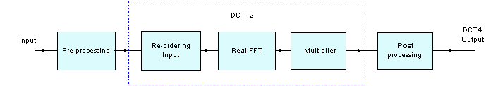
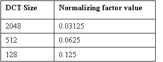
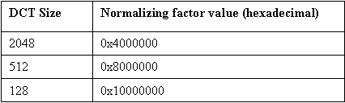
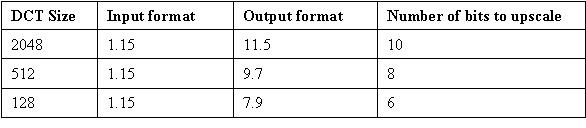

DCT Type IV Functions¶
-
void
riscv_dct4_f32(const riscv_dct4_instance_f32 *S, float32_t *pState, float32_t *pInlineBuffer)¶
-
riscv_status
riscv_dct4_init_f32(riscv_dct4_instance_f32 *S, riscv_rfft_instance_f32 *S_RFFT, riscv_cfft_radix4_instance_f32 *S_CFFT, uint16_t N, uint16_t Nby2, float32_t normalize)¶
-
riscv_status
riscv_dct4_init_q15(riscv_dct4_instance_q15 *S, riscv_rfft_instance_q15 *S_RFFT, riscv_cfft_radix4_instance_q15 *S_CFFT, uint16_t N, uint16_t Nby2, q15_t normalize)¶
-
riscv_status
riscv_dct4_init_q31(riscv_dct4_instance_q31 *S, riscv_rfft_instance_q31 *S_RFFT, riscv_cfft_radix4_instance_q31 *S_CFFT, uint16_t N, uint16_t Nby2, q31_t normalize)¶
-
void
riscv_dct4_q15(const riscv_dct4_instance_q15 *S, q15_t *pState, q15_t *pInlineBuffer)¶
-
void
riscv_dct4_q31(const riscv_dct4_instance_q31 *S, q31_t *pState, q31_t *pInlineBuffer)¶
-
group
DCT4_IDCT4 Representation of signals by minimum number of values is important for storage and transmission. The possibility of large discontinuity between the beginning and end of a period of a signal in DFT can be avoided by extending the signal so that it is even-symmetric. Discrete Cosine Transform (DCT) is constructed such that its energy is heavily concentrated in the lower part of the spectrum and is very widely used in signal and image coding applications. The family of DCTs (DCT type- 1,2,3,4) is the outcome of different combinations of homogeneous boundary conditions. DCT has an excellent energy-packing capability, hence has many applications and in data compression in particular.
DCT is essentially the Discrete Fourier Transform(DFT) of an even-extended real signal. Reordering of the input data makes the computation of DCT just a problem of computing the DFT of a real signal with a few additional operations. This approach provides regular, simple, and very efficient DCT algorithms for practical hardware and software implementations.
DCT type-II can be implemented using Fast fourier transform (FFT) internally, as the transform is applied on real values, Real FFT can be used. DCT4 is implemented using DCT2 as their implementations are similar except with some added pre-processing and post-processing. DCT2 implementation can be described in the following steps:
Re-ordering input
Calculating Real FFT
Multiplication of weights and Real FFT output and getting real part from the product.
This process is explained by the block diagram below: 
- Algorithm
The N-point type-IV DCT is defined as a real, linear transformation by the formula:
where
k = 0, 1, 2, ..., N-1
Its inverse is defined as follows:
where
n = 0, 1, 2, ..., N-1
The DCT4 matrices become involutory (i.e. they are self-inverse) by multiplying with an overall scale factor of sqrt(2/N). The symmetry of the transform matrix indicates that the fast algorithms for the forward and inverse transform computation are identical. Note that the implementation of Inverse DCT4 and DCT4 is same, hence same process function can be used for both.
- Lengths supported by the transform:
As DCT4 internally uses Real FFT, it supports all the lengths 128, 512, 2048 and 8192. The library provides separate functions for Q15, Q31, and floating-point data types.
- Instance Structure
The instances for Real FFT and FFT, cosine values table and twiddle factor table are stored in an instance data structure. A separate instance structure must be defined for each transform. There are separate instance structure declarations for each of the 3 supported data types.
- Initialization Functions
There is also an associated initialization function for each data type. The initialization function performs the following operations:
Sets the values of the internal structure fields.
Initializes Real FFT as its process function is used internally in DCT4, by calling riscv_rfft_init_f32().
Use of the initialization function is optional. However, if the initialization function is used, then the instance structure cannot be placed into a const data section. To place an instance structure into a const data section, the instance structure must be manually initialized. Manually initialize the instance structure as follows: where
Nis the length of the DCT4;Nby2is half of the length of the DCT4;normalizeis normalizing factor used and is equal tosqrt(2/N);pTwiddlepoints to the twiddle factor table;pCosFactorpoints to the cosFactor table;pRfftpoints to the real FFT instance;pCfftpoints to the complex FFT instance; The CFFT and RFFT structures also needs to be initialized, refer to riscv_cfft_radix4_f32() and riscv_rfft_f32() respectively for details regarding static initialization.- Fixed-Point Behavior
Care must be taken when using the fixed-point versions of the DCT4 transform functions. In particular, the overflow and saturation behavior of the accumulator used in each function must be considered. Refer to the function specific documentation below for usage guidelines.
Functions
-
void
riscv_dct4_f32(const riscv_dct4_instance_f32 *S, float32_t *pState, float32_t *pInlineBuffer) Processing function for the floating-point DCT4/IDCT4.
- Return
none
- Parameters
[in] S: points to an instance of the floating-point DCT4/IDCT4 structure[in] pState: points to state buffer[inout] pInlineBuffer: points to the in-place input and output buffer
-
riscv_status
riscv_dct4_init_f32(riscv_dct4_instance_f32 *S, riscv_rfft_instance_f32 *S_RFFT, riscv_cfft_radix4_instance_f32 *S_CFFT, uint16_t N, uint16_t Nby2, float32_t normalize) Initialization function for the floating-point DCT4/IDCT4.

- Return
execution status
RISCV_MATH_SUCCESS : Operation successful
RISCV_MATH_ARGUMENT_ERROR :
Nis not a supported transform length
- Normalizing factor
The normalizing factor is
sqrt(2/N), which depends on the size of transformN. Floating-point normalizing factors are mentioned in the table below for different DCT sizes:- Parameters
[inout] S: points to an instance of floating-point DCT4/IDCT4 structure[in] S_RFFT: points to an instance of floating-point RFFT/RIFFT structure[in] S_CFFT: points to an instance of floating-point CFFT/CIFFT structure[in] N: length of the DCT4[in] Nby2: half of the length of the DCT4[in] normalize: normalizing factor.
-
riscv_status
riscv_dct4_init_q15(riscv_dct4_instance_q15 *S, riscv_rfft_instance_q15 *S_RFFT, riscv_cfft_radix4_instance_q15 *S_CFFT, uint16_t N, uint16_t Nby2, q15_t normalize) Initialization function for the Q15 DCT4/IDCT4.

- Return
execution status
RISCV_MATH_SUCCESS : Operation successful
RISCV_MATH_ARGUMENT_ERROR :
Nis not a supported transform length
- Normalizing factor
The normalizing factor is
sqrt(2/N), which depends on the size of transformN. Normalizing factors in 1.15 format are mentioned in the table below for different DCT sizes:- Parameters
[inout] S: points to an instance of Q15 DCT4/IDCT4 structure[in] S_RFFT: points to an instance of Q15 RFFT/RIFFT structure[in] S_CFFT: points to an instance of Q15 CFFT/CIFFT structure[in] N: length of the DCT4[in] Nby2: half of the length of the DCT4[in] normalize: normalizing factor
-
riscv_status
riscv_dct4_init_q31(riscv_dct4_instance_q31 *S, riscv_rfft_instance_q31 *S_RFFT, riscv_cfft_radix4_instance_q31 *S_CFFT, uint16_t N, uint16_t Nby2, q31_t normalize) Initialization function for the Q31 DCT4/IDCT4.

- Return
execution status
RISCV_MATH_SUCCESS : Operation successful
RISCV_MATH_ARGUMENT_ERROR :
Nis not a supported transform length
- Normalizing factor:
The normalizing factor is
sqrt(2/N), which depends on the size of transformN. Normalizing factors in 1.31 format are mentioned in the table below for different DCT sizes:- Parameters
[inout] S: points to an instance of Q31 DCT4/IDCT4 structure.[in] S_RFFT: points to an instance of Q31 RFFT/RIFFT structure[in] S_CFFT: points to an instance of Q31 CFFT/CIFFT structure[in] N: length of the DCT4.[in] Nby2: half of the length of the DCT4.[in] normalize: normalizing factor.
-
void
riscv_dct4_q15(const riscv_dct4_instance_q15 *S, q15_t *pState, q15_t *pInlineBuffer) Processing function for the Q15 DCT4/IDCT4.

- Return
none
- Input an output formats
Internally inputs are downscaled in the RFFT process function to avoid overflows. Number of bits downscaled, depends on the size of the transform. The input and output formats for different DCT sizes and number of bits to upscale are mentioned in the table below:
- Parameters
[in] S: points to an instance of the Q15 DCT4 structure.[in] pState: points to state buffer.[inout] pInlineBuffer: points to the in-place input and output buffer.
-
void
riscv_dct4_q31(const riscv_dct4_instance_q31 *S, q31_t *pState, q31_t *pInlineBuffer) Processing function for the Q31 DCT4/IDCT4.

- Return
none
- Input an output formats
Input samples need to be downscaled by 1 bit to avoid saturations in the Q31 DCT process, as the conversion from DCT2 to DCT4 involves one subtraction. Internally inputs are downscaled in the RFFT process function to avoid overflows. Number of bits downscaled, depends on the size of the transform. The input and output formats for different DCT sizes and number of bits to upscale are mentioned in the table below:
- Parameters
[in] S: points to an instance of the Q31 DCT4 structure.[in] pState: points to state buffer.[inout] pInlineBuffer: points to the in-place input and output buffer.